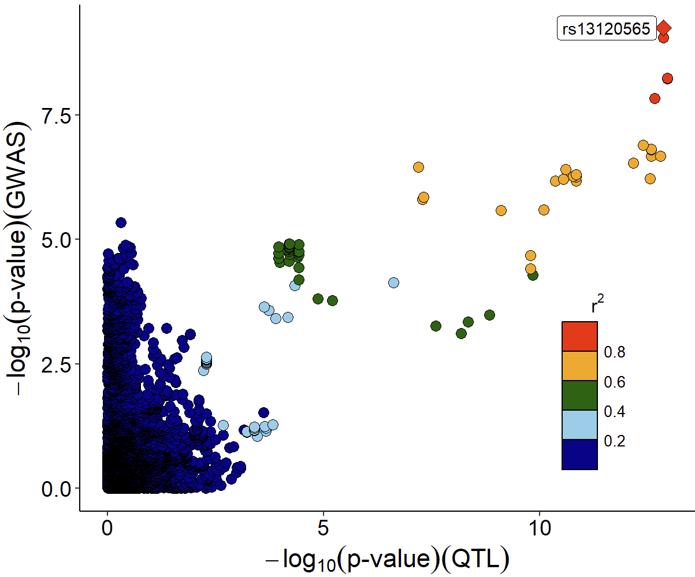
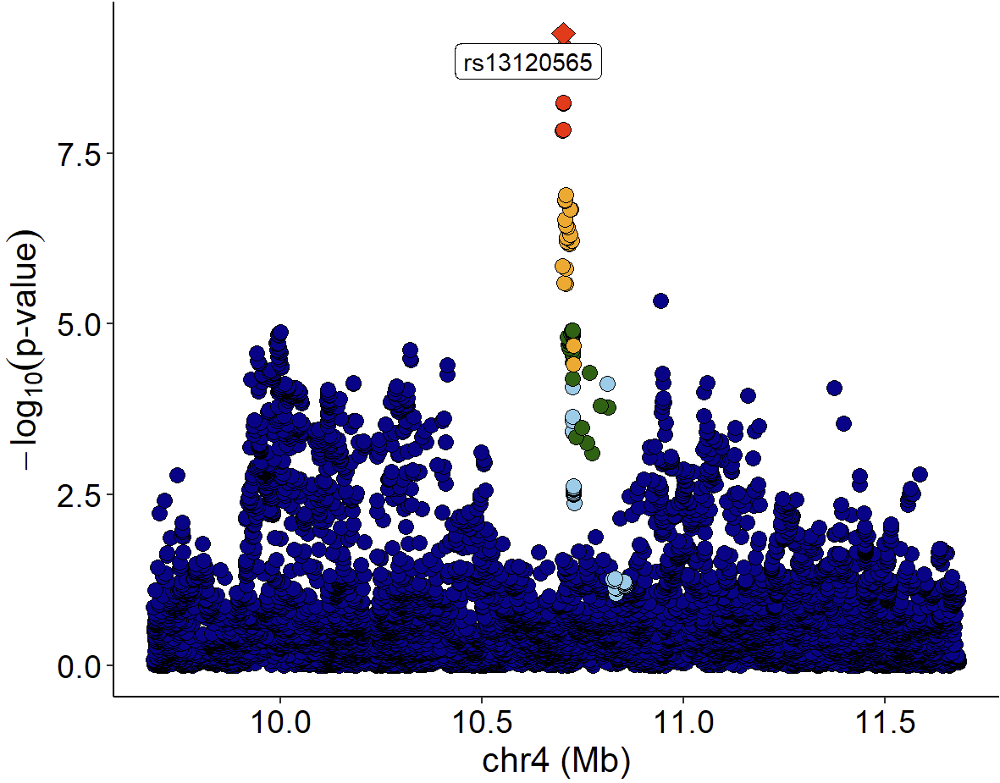
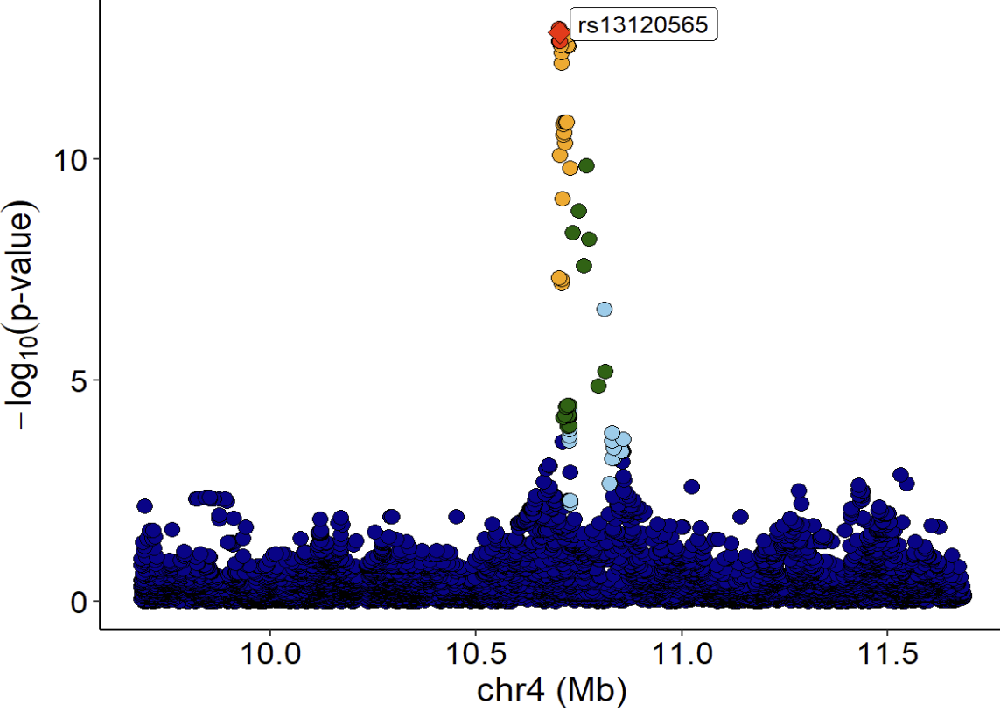
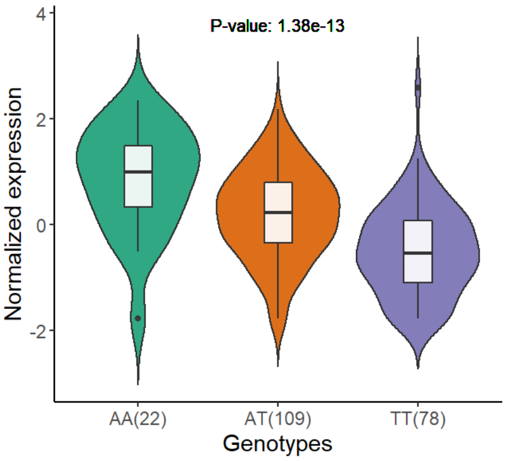
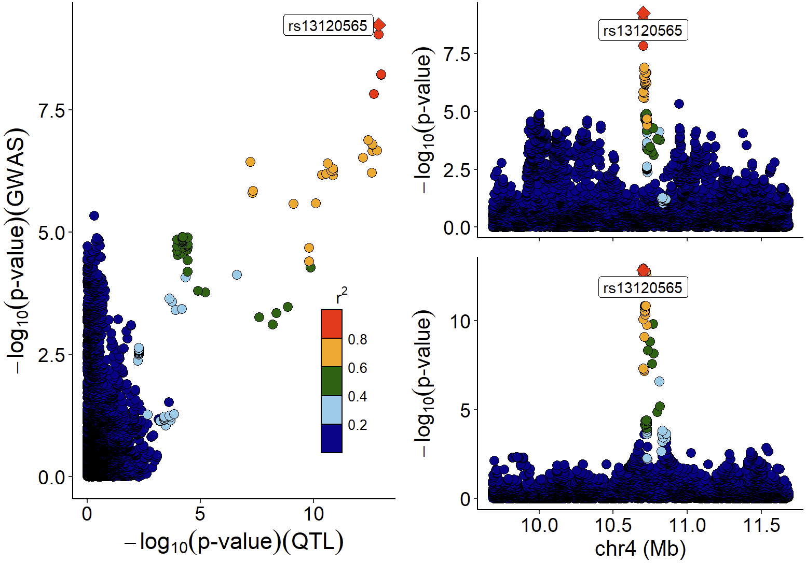

Quick_start.RmdColocalization analysis can be performed with xQTLbiolinks by providing their own GWAS summary statistics data. All we need to prepare include three parts:
library(data.table)
library(xQTLbiolinks)
library(stringr)Download and load an example file of summary statistics dataset (GRCh38). We perform colocalization analysis in Brain - Cerebellum.
gwasDF <- fread("http://raw.githubusercontent.com/dingruofan/exampleData/master/gwas/AD/gwasDFsub.txt")
tissueSiteDetail="Brain - Cerebellum"In this example, a data.table object of 16538 (rows) x 5 (cols) is loaded. Five columns are required (arbitrary column names is supported, but columns must be as the following order):
Col 1. “variants” (character), , using an rsID (e.g. “rs11966562”);
Col 2. “chromosome” (character), one of the chromosome from chr1-chr22;
Col 3. “position” (integer), genome position of snp;
Col 4. “P-value” (numeric);
Col 5. “MAF” (numeric). Allel frequency;
head(gwasDF)#> rsid chrom position pValue maf
#> 1 rs13120565 chr4 10702513 5.66e-10 0.6429
#> 2 rs4697781 chr4 10703243 8.94e-10 0.6446
#> 3 rs4697779 chr4 10701187 5.74e-09 0.3231
#> 4 rs4697780 chr4 10701381 5.95e-09 0.3231
#> 5 rs4547789 chr4 10702891 1.46e-08 0.3197
#> 6 rs11726285 chr4 10700944 1.47e-08 0.3214Sentinel SNPs can be detected using xQTLanalyze_getSentinelSnp with the arguments p-value < 5e-8 and SNP-to-SNP distance > 10e6 bp. We recommend converting the genome version of the GWAS file to GRCh38 if that is GRCh37 (run with parameter: genomeVersion="grch37"; grch37To38=TRUE, and package rtracklayeris required).
sentinelSnpDF <- xQTLanalyze_getSentinelSnp(gwasDF, pValueThreshold = 5e-08)After filtering, a sentinel SNP with P-value<5e-8 is detected in this example:
sentinelSnpDF#> rsid chr position pValue maf
#> 1 rs13120565 chr4 10702513 5.66e-10 0.6429Trait genes are genes that located in the range of 1Mb (default, can be changed with parameter detectRange) of sentinel SNPs. Every gene within 1Mb of sentinel SNPs is searched by fuction xQTLanalyze_getTraits. Besides, In order to reduce the number of trait genes and thus reduce the running time, we take the overlap of eGenes and trait genes as the final output of the function xQTLanalyze_getTraits.
traitsAll <- xQTLanalyze_getTraits(sentinelSnpDF, detectRange=1e6, tissueSiteDetail=tissueSiteDetail)Totally, 3 associations between 3 traits genes and 1 SNPs are detected
traitsAll#> chromosome geneStart geneEnd geneStrand geneSymbol gencodeId
#> 1 chr4 11393150 11429765 - HS3ST1 ENSG00000002587.9
#> 2 chr4 10486395 10684865 - CLNK ENSG00000109684.14
#> 3 chr4 10068089 10073019 - RP11-448G15.3 ENSG00000261490.1
#> rsid position pValue maf
#> 1 rs13120565 10702513 5.66e-10 0.6429
#> 2 rs13120565 10702513 5.66e-10 0.6429
#> 3 rs13120565 10702513 5.66e-10 0.6429For a single trait gene, like CLNK in above table, colocalization analysis can be performed with:
output <- xQTLanalyze_coloc(gwasDF, "CLNK", tissueSiteDetail=tissueSiteDetail) # using gene symboloutput is a list, including three parts: coloc_Out_summary, gwasEqtlInfo, and gwasEqtlInfo.
output$coloc_Out_summary#> nsnps PP.H0.abf PP.H1.abf PP.H2.abf PP.H3.abf PP.H4.abf traitGene
#> 1 7108 7.097893e-11 1.32221e-07 3.890211e-06 0.00625302 0.993743 CLNKFor multiple trait genes, a for loop or lapply function can be used to get all genes’ outputs.
outputs <- rbindlist(lapply( unique(traitsAll$gencodeId), function(x){ # using gencode ID.
xQTLanalyze_coloc(gwasDF, x, tissueSiteDetail=tissueSiteDetail)$coloc_Out_summary }))outputs is a data.table that combined all results of coloc_Out_summary of all genes.
outputs#> nsnps PP.H0.abf PP.H1.abf PP.H2.abf PP.H3.abf PP.H4.abf
#> 1 6453 1.730172e-05 3.218423e-02 6.603463e-05 0.12199027 0.84574216
#> 2 7108 7.097893e-11 1.322210e-07 3.890211e-06 0.00625302 0.99374296
#> 3 6601 5.287051e-05 9.848309e-02 4.801374e-04 0.89435622 0.00662768
#> traitGene
#> 1 ENSG00000002587.9
#> 2 ENSG00000109684.14
#> 3 ENSG00000261490.1For the potential casual gene (ENSG00000187323.11, PP4=0.9937), We merge the variants of GWAS and eQTL by rsid.
eqtlAsso <- xQTLdownload_eqtlAllAsso(gene="ENSG00000109684.14",
tissueLabel = tissueSiteDetail)
gwasEqtldata <- merge(gwasDF, eqtlAsso[,.(rsid=snpId, position=pos, maf, pValue)],
by=c("rsid", "position"), suffixes = c(".gwas",".eqtl"))Visualization of p-value distribution and comparison of the signals of GWAS and eQTL:
xQTLvisual_locusCompare(gwasEqtldata[,.(rsid, pValue.eqtl)],
gwasEqtldata[,.(rsid, pValue.gwas)], legend_position = "bottomright")
Locuszoom plot of GWAS signals:
xQTLvisual_locusZoom(gwasEqtldata[,.(rsid, chrom, position, pValue.gwas)], legend=FALSE)
Locuszoom plot of eQTL signals:
xQTLvisual_locusZoom(gwasEqtldata[,.(rsid, chrom, position, pValue.eqtl)],
highlightSnp = "rs13120565", legend=FALSE)
Violin plot of normalized exprssion of eQTL:
xQTLvisual_eqtlExp("rs13120565", "ENSG00000109684.14", tissueSiteDetail = tissueSiteDetail)
We can also combine locuscompare and locuszoom plot using xQTLvisual_locusCombine:
xQTLvisual_locusCombine(gwasEqtldata[,c("rsid","chrom", "position", "pValue.gwas", "pValue.eqtl")],
highlightSnp="rs13120565")
For applying xQTLbiolinks to a whole case study, please find this Document.